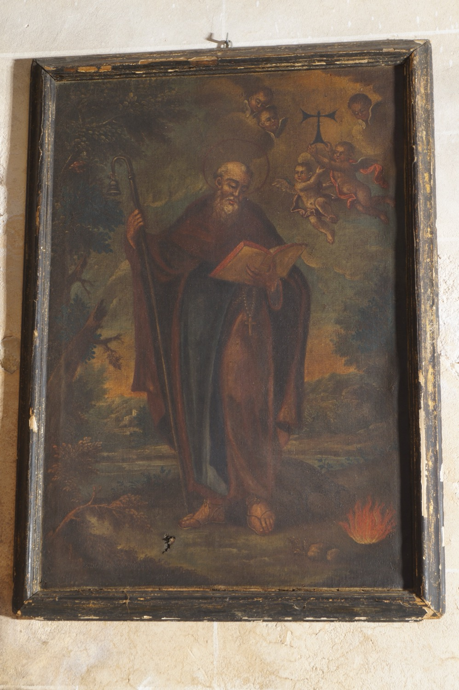

Sant Antoni Abat (251–356) va ser un monjo egipci. És conegut també com sant Antoni de Viana, nom que deriva de Vienne, a França, on es fundà a l’edat mitjana l’Orde dels Canonges Regulars de Sant Antoni, o antonians; a Mallorca és també popularment conegut com sant Antoni dels Ases. Fill d’una família rica, en morir els seus pares repartí tota la seva herència entre els pobres i es retirà a viure al desert. És famós per les seves lluites contra el diable i les seves temptacions. Va ser el fundador del moviment dels anacoretes i el pare espiritual del monaquisme cristià, d’aquí el qualificatiu d’abat, malgrat que no ho va ser de cap monestir.
En aquesta pintura se’l representa com un ancià amb un llibre a la mà, símbol de la Paraula de Déu, i un bastó d’ermità del qual penja una campaneta. Aquesta campaneta fa referència a la seva relació amb els antonians, que identificaven amb campanetes els porcs que criaven per obtenir el greix amb què curaven el “foc de sant Antoni”, una intoxicació alimentària provocada pel consum de sègol contaminat per un fong paràsit. Als peus crema un foc que simbolitza precisament aquest “foc de sant Antoni”. Al cel els angelets sostenen una lletra greca majúscula Tau, signe de salvació i protecció divina per als primers cristians i que els antonians portaven cosida en els seus hàbits.”